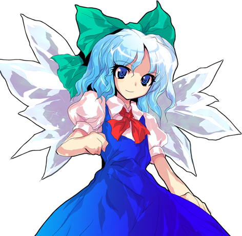

チルノ 치르노
キャラクター 캐릭터
自信満々で元気な氷の妖精。一人称は「あたい」。「最強」が口癖で、「バカ」と言われるとむきになります。
자신만만하고 기운찬 얼음 요정. 1인칭은 「あたい」. 「最強」이 입버릇이고, 「バカ」라는 말에 발끈합니다.
サンプル4（Hikari） 4:30〜4:42 ／ 方言はなしで
샘플 4 (Hikari) 4:30〜4:42 / 사투리는 빼고
参考映像 참고 영상
参考区間 참고 구간 6:29〜6:40 YouTube
付録：ゲーム内映像 부록: 인게임 영상
AI音声による仮の音声です。状況の参考にだけしてください。
AI 임시 음성입니다. 상황만 참고하세요.
表の ▶ を押すと、その台詞の場面から再生します。
표의 ▶를 누르면 그 대사 장면부터 재생합니다.
台詞 대사
掛け声 기합 (14)
| No | 映像 | ファイル名 | 状況 상황 | 台詞 | 読み | 意味 뜻 |
|---|---|---|---|---|---|---|
| 1 | vo_cirno_eff_l_01 | 弱攻撃の掛け声 약공격 기합 | えいっ！ | えいっ | 에잇! | |
| 2 | vo_cirno_eff_l_02 | 弱攻撃の掛け声 약공격 기합 | やっ！ | やっ | 얍! | |
| 3 | vo_cirno_eff_l_03 | 弱攻撃の掛け声 약공격 기합 | てやっ！ | てやっ | 테얏! | |
| 4 | vo_cirno_eff_l_04 | 弱攻撃の掛け声 약공격 기합 | ほっ！ | ほっ | 홋! | |
| 5 | vo_cirno_eff_h_01 | 強攻撃の掛け声 강공격 기합 | やあーっ！ | やあーっ | 야아앗! | |
| 6 | vo_cirno_eff_h_02 | 強攻撃の掛け声 강공격 기합 | とりゃー！ | とりゃー | 에잇! | |
| 7 | vo_cirno_eff_h_03 | 強攻撃の掛け声 강공격 기합 | せいやっ！ | せいやっ | 세이얏! | |
| 8 | vo_cirno_eff_h_04 | 強攻撃の掛け声 강공격 기합 | とおーっ！ | とおーっ | 토오앗! | |
| 9 | vo_cirno_eff_w_01 | 強攻撃のひとこと 강공격 한마디 | どうだ！ | どうだ | 어때! | |
| 10 | vo_cirno_eff_w_02 | 強攻撃のひとこと 강공격 한마디 | 最強！ | さいきょう | 최강! | |
| 11 | vo_cirno_eff_w_03 | 強攻撃のひとこと 강공격 한마디 | くらえ！ | くらえ | 받아라! | |
| 12 | vo_cirno_eff_w_04 | 強攻撃のひとこと 강공격 한마디 | おそい！ | おそい | 느려! | |
| 13 | vo_cirno_eff_s_01 | ジャンプ・ダッシュの小さな息 점프·대시 숨소리 | よっ | よっ | 흣 | |
| 14 | vo_cirno_eff_s_02 | ジャンプ・ダッシュの小さな息 점프·대시 숨소리 | ほいっ | ほいっ | 호잇 |
必殺技 필살기 (8)
| No | 映像 | ファイル名 | 状況 상황 | 台詞 | 読み | 意味 뜻 |
|---|---|---|---|---|---|---|
| 15 | vo_cirno_Special1_01 | 必殺技1（技名） 필살기 1 (기술 이름) | アイシクルフォール！ | あいしくるふぉーる | 아이시클 폴! | |
| 16 | vo_cirno_Special1_02 | 必殺技1（ひとこと） 필살기 1 (한마디) | つらら、落ちろー！ | つらら おちろー | 고드름, 떨어져라! | |
| 17 | vo_cirno_Special3_01 | 必殺技3（技名） 필살기 3 (기술 이름) | グレートクラッシャー！ | ぐれーとくらっしゃー | 그레이트 크래셔! | |
| 18 | vo_cirno_Special3_02 | 必殺技3（ひとこと） 필살기 3 (한마디) | つぶれちゃえー！ | つぶれちゃえー | 납작해져라! | |
| 19 | vo_cirno_Special4_01 | 必殺技4（技名） 필살기 4 (기술 이름) | パーフェクトフリーズ！ | ぱーふぇくとふりーず | 퍼펙트 프리즈! | |
| 20 | vo_cirno_Special4_02 | 必殺技4（ひとこと） 필살기 4 (한마디) | 凍っちゃえ！ | こおっちゃえ | 얼어 버려! | |
| 21 | vo_cirno_Special5 | 必殺技5（技名） 필살기 5 (기술 이름) | すべるよー！ | すべるよー | 미끄러진다~! | |
| 22 | vo_cirno_Special6 | 必殺技6（技名） 필살기 6 (기술 이름) | 下からどーん！ | したから どーん | 아래서, 쾅! |
スペルカード宣言 스펠카드 선언 (2)
| No | 映像 | ファイル名 | 状況 상황 | 台詞 | 読み | 意味 뜻 |
|---|---|---|---|---|---|---|
| 23 | vo_cirno_Spell1_call | スペルカード（超必殺技）1の宣言 스펠카드 1 선언 | 氷符「アイシクルマシンガン」！ | ひょうふ あいしくるましんがん | 빙부, 아이시클 머신건! | |
| 24 | vo_cirno_Spell2_call | スペルカード（超必殺技）2の宣言 스펠카드 2 선언 | 吹氷「アイストルネード」！ | すいひょう あいすとるねーど | 취빙, 아이스 토네이도! |
システム・挑発 시스템·도발 (7)
| No | 映像 | ファイル名 | 状況 상황 | 台詞 | 読み | 意味 뜻 |
|---|---|---|---|---|---|---|
| 25 | vo_cirno_ThrowForward | 前投げ 앞 잡기 | すべってけー！ | すべってけー | 미끄러져 가라! | |
| 26 | vo_cirno_ThrowBack | 後ろ投げ 뒤 잡기 | カエルにしてやる！ | かえるにしてやる | 개구리로 만들어 주지! | |
| 27 | vo_cirno_SpiritCancel | スピリットキャンセル（動作を中断して仕切り直す） 스피릿 캔슬 | まだまだー！ | まだまだー | 아직이야! | |
| 28 | vo_cirno_Bomb | ボム（相手を吹き飛ばす緊急回避） 봄(버스트) | 離れろー！ | はなれろー | 떨어져! | |
| 29 | vo_cirno_GuardCancel | ガードキャンセル（ガード中の反撃） 가드 캔슬 | じゃまっ！ | じゃまっ | 방해돼! | |
| 30 | vo_cirno_Taunt_01 | 挑発 도발 | あたいったら最強ね！ | あたいったら さいきょうね | 역시 나는 최강이야! | |
| 31 | vo_cirno_Taunt_02 | 挑発 도발 | バカじゃないもん！ | ばかじゃないもん | 바보 아니거든! |
キャラクター固有 캐릭터 고유 (2)
| No | 映像 | ファイル名 | 状況 상황 | 台詞 | 読み | 意味 뜻 |
|---|---|---|---|---|---|---|
| 32 | vo_cirno_LevelMax | 最強ゲージが⑨になった 최강 게이지 ⑨ 도달 | 最強ーーっ！ | さいきょーーっ | 최강ーー! | |
| 33 | vo_cirno_Dizzy | アイストルネードの後、目が回る 아이스 토네이도 뒤 어지러움 | 目が回る〜…… | めがまわるー | 눈이 빙글빙글~… |
被ダメージ・KO 피격·KO (8)
| No | 映像 | ファイル名 | 状況 상황 | 台詞 | 読み | 意味 뜻 |
|---|---|---|---|---|---|---|
| 34 | vo_cirno_hurt_l_01 | 小ダメージ 약한 피격 | いたっ！ | いたっ | 아얏! | |
| 35 | vo_cirno_hurt_l_02 | 小ダメージ 약한 피격 | うぅっ！ | うぅっ | 으읏! | |
| 36 | vo_cirno_hurt_l_03 | 小ダメージ 약한 피격 | ひゃっ！ | ひゃっ | 히얏! | |
| 37 | vo_cirno_hurt_h_01 | 大ダメージ・吹き飛び・投げられ 강한 피격·날아감·잡힘 | うわーっ！ | うわーっ | 우와앗! | |
| 38 | vo_cirno_hurt_h_02 | 大ダメージ・吹き飛び・投げられ 강한 피격·날아감·잡힘 | ひゃあああっ！ | ひゃあああっ | 히야아앗! | |
| 39 | vo_cirno_hurt_h_03 | 大ダメージ・吹き飛び・投げられ 강한 피격·날아감·잡힘 | いったーい！ | いったーい | 아프잖아! | |
| 40 | vo_cirno_KO_01 | KO（倒れる） KO | うわああーん！ | うわああーん | 으아아앙! | |
| 41 | vo_cirno_KO_02 | KO（倒れる） KO | 一回休み…… | いっかい やすみ | 1회 휴식… |
ラウンド・勝敗 라운드·승패 (12)
| No | 映像 | ファイル名 | 状況 상황 | 台詞 | 読み | 意味 뜻 |
|---|---|---|---|---|---|---|
| 42 | vo_cirno_Intro_01 | 登場（共通） 등장(공통) | あたいの縄張りで、なにしてるの？ | あたいのなわばりで なにしてるの | 내 구역에서 뭐 하는 거야? | |
| 43 | vo_cirno_Intro_02 | 登場（共通） 등장(공통) | 最強のあたいに、勝てると思ってる？ | さいきょうのあたいに かてるとおもってる | 최강인 나를 이길 수 있을 것 같아? | |
| 44 | vo_cirno_Intro_03 | 登場（共通） 등장(공통) | カエルみたいに、凍らせてあげる！ | かえるみたいに こおらせてあげる | 개구리처럼 얼려 줄게! | |
| 45 | vo_cirno_RoundWin_01 | ラウンド勝利（短く） 라운드 승리(짧게) | よゆーよゆー！ | よゆー よゆー | 여유 여유! | |
| 46 | vo_cirno_RoundWin_02 | ラウンド勝利（短く） 라운드 승리(짧게) | えっへん！ | えっへん | 에헴! | |
| 47 | vo_cirno_RoundWin_03 | ラウンド勝利（短く） 라운드 승리(짧게) | もうおしまい？ | もう おしまい | 벌써 끝이야? | |
| 48 | vo_cirno_Win_01 | 試合に勝利 게임 승리 | あたいの勝ち！ 最強だもんね！ | あたいのかち さいきょうだもんね | 내가 이겼다! 최강이니까! | |
| 49 | vo_cirno_Win_02 | 試合に勝利 게임 승리 | ふふーん、かんたんかんたん！ | ふふーん かんたんかんたん | 흐흥~ 쉽다 쉬워! | |
| 50 | vo_cirno_Win_03 | 試合に勝利 게임 승리 | 次はだれ？ かかってきなさい！ | つぎはだれ かかってきなさい | 다음은 누구? 덤벼! | |
| 51 | vo_cirno_Perfect | ノーダメージで勝利 퍼펙트 승리 | ほら、さわれもしなかったでしょ！ | ほら さわれもしなかったでしょ | 봐 봐 손도 못 댔지! | |
| 52 | vo_cirno_RoundLose | ラウンド負け（相手の勝利ポーズ中） 라운드 패배 | きょ、今日は調子わるいだけだもん…… | きょ きょうはちょうしわるいだけだもん | 오늘은 컨디션이 나빴을 뿐이야… | |
| 53 | vo_cirno_TimeOverLose | タイムオーバーで負け 타임오버 패배 | あれ？ もう終わり？ | あれ もうおわり | 어라? 벌써 끝? |
対戦相手別 상대별 (15)
| No | 映像 | ファイル名 | 状況 상황 | 台詞 | 読み | 意味 뜻 |
|---|---|---|---|---|---|---|
| 54 | vo_cirno_Intro_reimu_a | 登場：霊夢戦（先に話す。霊夢が「はいはい、最強最強。」と返します） 등장: 레이무전 (먼저 말함. 레이무의 응답 「그래그래, 최강 최강.」) | 霊夢！ 今日こそあたいが最強だ！ | れいむ きょうこそ あたいがさいきょうだ | 레이무! 오늘이야말로 내가 최강이다! | |
| 55 | vo_cirno_Intro_reimu_b | 登場：霊夢戦（霊夢の「氷の妖精は湖で遊んでなさい。」に返す） 등장: 레이무전 (레이무의 「얼음 요정은 호수에서 놀아.」에 대답) | 子どもあつかいするなー！ | こどもあつかい するなー | 애 취급하지 마! | |
| 56 | vo_cirno_Win_reimu | 霊夢に勝利 레이무에게 승리 | 巫女に勝った！ やっぱりあたいが最強！ | みこにかった やっぱりあたいがさいきょう | 무녀를 이겼다! 역시 내가 최강! | |
| 57 | vo_cirno_Intro_marisa_a | 登場：魔理沙戦（先に話す。魔理沙が「光は凍らないぜ、チルノ。」と返します） 등장: 마리사전 (먼저 말함. 마리사의 응답 「빛은 안 얼거든, 치르노.」) | 魔理沙のレーザーなんか、凍らせてやる！ | まりさのれーざーなんか こおらせてやる | 마리사의 레이저 따위 얼려 주지! | |
| 58 | vo_cirno_Intro_marisa_b | 登場：魔理沙戦（魔理沙の「ちょうどいい、かき氷にしてやるぜ。」に返す） 등장: 마리사전 (마리사의 「딱 좋네, 빙수로 만들어 주지.」에 대답) | かき氷じゃない、最強だ！ | かきごおりじゃない さいきょうだ | 빙수 아니야, 최강이야! | |
| 59 | vo_cirno_Win_marisa | 魔理沙に勝利 마리사에게 승리 | ほうきごと凍っちゃったね！ | ほうきごと こおっちゃったね | 빗자루째로 얼어 버렸네! | |
| 60 | vo_cirno_Intro_aya_a | 登場：文戦（先に話す） 등장: 아야전 (먼저 말함) | また写真？ かっこよく撮ってよね！ | またしゃしん かっこよくとってよね | 또 사진이야? 멋있게 찍어 줘! | |
| 61 | vo_cirno_Intro_aya_b | 登場：文戦（返事） 등장: 아야전 (응답) | 取材？ 最強のひけつを教えてあげる！ | しゅざい さいきょうのひけつを おしえてあげる | 취재? 최강의 비결을 알려 주지! | |
| 62 | vo_cirno_Win_aya | 文に勝利 아야에게 승리 | 新聞の一面は、あたいで決まり！ | しんぶんのいちめんは あたいできまり | 신문 1면은 나로 정해졌네! | |
| 63 | vo_cirno_Intro_meiling_a | 登場：美鈴戦（先に話す。美鈴が「寝てないよ！ ちょっと目をつぶってただけ！」と返します） 등장: 메이링전 (먼저 말함. 메이링의 응답 「안 잤어! 잠깐 눈 감고 있었을 뿐이야!」) | また寝てるの？ 門番失格！ | またねてるの もんばんしっかく | 또 자는 거야? 문지기 실격! | |
| 64 | vo_cirno_Intro_meiling_b | 登場：美鈴戦（美鈴の「門は遊び場じゃないよ、チルノ。」に返す） 등장: 메이링전 (메이링의 「문은 놀이터가 아니야, 치르노.」에 대답) | 遊びじゃない、道場破りだ！ | あそびじゃない どうじょうやぶりだ | 놀이 아니야, 도장 깨기다! | |
| 65 | vo_cirno_Win_meiling | 美鈴に勝利 메이링에게 승리 | 門番より、あたいのほうが強い！ | もんばんより あたいのほうがつよい | 문지기보다 내가 더 세! | |
| 66 | vo_cirno_Intro_suwako_a | 登場：諏訪子戦（先に話す。諏訪子が「あたしを凍らせる？ 千年早いよ。」と返します） 등장: 스와코전 (먼저 말함. 스와코의 응답 「날 얼린다고? 천 년은 이르다.」) | でっかいカエル！ 凍らせがいがあるね！ | でっかいかえる こおらせがいがあるね | 커다란 개구리다! 얼릴 맛이 나겠네! | |
| 67 | vo_cirno_Intro_suwako_b | 登場：諏訪子戦（諏訪子の「うちの蛙を凍らせたの、あんたでしょ？」に返す） 등장: 스와코전 (스와코의 「우리 개구리 얼린 거, 너지?」에 대답) | そうだよ！ カエルは凍らせるものだもん！ | そうだよ かえるは こおらせるものだもん | 맞아! 개구리는 얼리라고 있는 거야! | |
| 68 | vo_cirno_Win_suwako | 諏訪子に勝利 스와코에게 승리 | カエルの神さまも、カチコチだね！ | かえるのかみさまも かちこちだね | 개구리 신도 꽁꽁이네! |
予備（今は使っていない技名・スペル宣言。こちらも収録します） 예비 (지금은 안 쓰는 기술 이름·스펠 선언, 함께 녹음) (11)
| No | 映像 | ファイル名 | 状況 상황 | 台詞 | 読み | 意味 뜻 |
|---|---|---|---|---|---|---|
| 69 | vo_cirno_Extra_IcicleShot | 予備の技名 예비 기술 외침 | アイシクルシュート！ | あいしくるしゅーと | 아이시클 슛! | |
| 70 | vo_cirno_Extra_FrostPillars | 予備の技名 예비 기술 외침 | フロストピラーズ！ | ふろすとぴらーず | 프로스트 필러즈! | |
| 71 | vo_cirno_Extra_IceCharge | 予備の技名 예비 기술 외침 | アイスチャージ！ | あいすちゃーじ | 아이스 차지! | |
| 72 | vo_cirno_Extra_FreezeTouchMe | 予備の技名 예비 기술 외침 | フリーズタッチミー！ | ふりーずたっちみー | 프리즈 터치 미! | |
| 73 | vo_cirno_Extra_LittleIceberg | 予備の技名 예비 기술 외침 | リトルアイスバーグ！ | りとるあいすばーぐ | 리틀 아이스버그! | |
| 74 | vo_cirno_Extra_IceKick | 予備の技名 예비 기술 외침 | アイスキック！ | あいすきっく | 아이스 킥! | |
| 75 | vo_cirno_ExtraSpell_DiamondBlizzard | 予備のスペルカード宣言 예비 스펠카드 선언 | 雪符「ダイアモンドブリザード」！ | せっぷ だいあもんどぶりざーど | 설부「다이아몬드 블리자드」! | |
| 76 | vo_cirno_ExtraSpell_PerfectFreeze | 予備のスペルカード宣言 예비 스펠카드 선언 | 凍符「パーフェクトフリーズ」！ | とうふ ぱーふぇくとふりーず | 동부「퍼펙트 프리즈」! | |
| 77 | vo_cirno_ExtraSpell_SwordFreezer | 予備のスペルカード宣言 예비 스펠카드 선언 | 氷符「ソードフリーザー」！ | ひょうふ そーどふりーざー | 빙부「소드 프리저」! | |
| 78 | vo_cirno_ExtraSpell_FrostColumns | 予備のスペルカード宣言 예비 스펠카드 선언 | 霜符「フロストコラムス」！ | そうふ ふろすところむす | 상부「프로스트 컬럼스」! | |
| 79 | vo_cirno_ExtraSpell_MinusK | 予備のスペルカード宣言 예비 스펠카드 선언 | 凍符「マイナスK」！ | とうふ まいなすけるびん | 동부「마이너스 K」! |